Sistemul de urgență: de la salvarea teritorializată la SMURD și unitățile de primiri urgențe
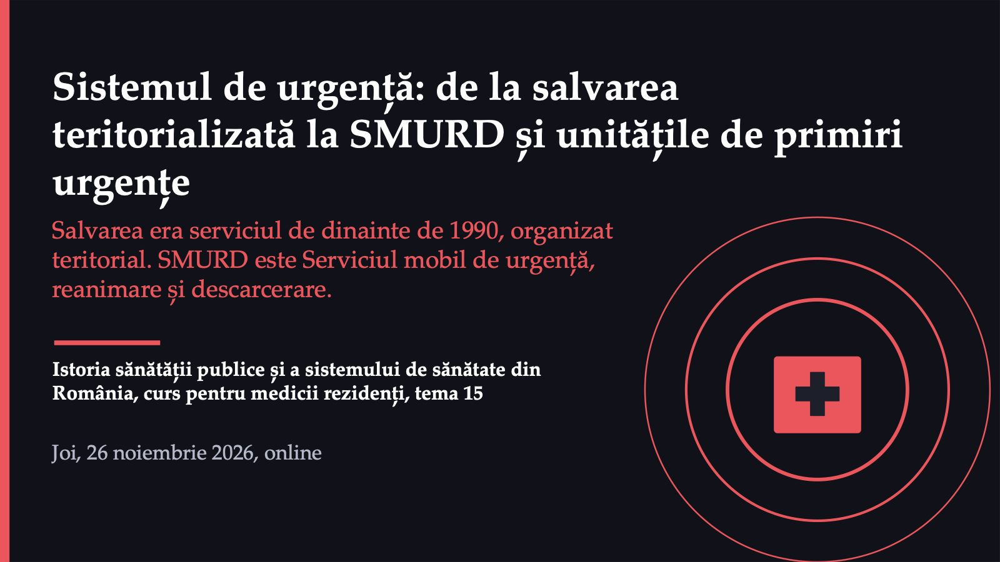
1 / 70Bună ziua. Tema de azi este sistemul de urgență: Serviciul mobil de urgență, reanimare și descarcerare (SMURD), serviciile de ambulanță, unitățile și compartimentele de primire a urgențelor. O citim în două feluri: ca istorie a unei schimbări din sistemul de sănătate și ca meserie, pe un document oficial real, pe care îl punem lângă lege.
Cum lucrăm azi, online
![DESCHIDEREA: UN TABEL ȘI O NORMĂ Cum lucrăm azi, online Toată ședința folosim o singură pagină: menti.com, cu codul 4869 2640. Intrați acum, scanând codul QR, și lăsați pagina deschisă până la sfârșit. ? În câteva momente vă cerem acolo o opinie anonimă; nu există răspuns corect. Spre sfârșit lucrați un sfert de oră în grupuri mici, în camere de lucru separate; la întoarcere, un membru al grupului scrie răspunsurile în aceeași pagină. La încheiere jucăm un Kahoot pe concepte, care nu se notează. Este singura dată când schimbăm pagina. menti.com · 4869 2640](diapozitive/C15/002.jpg) 2 / 70
2 / 70Aveți nevoie numai de un calculator sau de un telefon. Intrați acum în pagina Mentimeter și lăsați-o deschisă: este aceeași toată ședința. Opiniile sunt anonime și nicio variantă nu e greșită. Spre sfârșit lucrați un sfert de oră în grupuri mici, apoi citim împreună ce ați scris.
Cazul ședinței: timpul până la ajutor, în oraș și la sat
![DESCHIDEREA: UN TABEL ȘI O NORMĂ Cazul ședinței: timpul până la ajutor, în oraș și la sat Lucrăm pe un document real și public: raportul de evaluare a activității pe anul 2025 al Inspectoratului pentru Situații de Urgență (ISU) „Avram Iancu” al Județului Cluj. Lângă el punem norma din Legea nr. 95/2006, titlul IV, care fixează timpul maxim în care echipajul trebuie să ajungă la caz. Întrebarea ședinței: ce poate spune un medic de sănătate publică, cu aceste două texte în față, despre accesul oamenilor din județ la ajutorul de urgență? Și ce i-ar mai trebui ca să poată spune mai mult?](diapozitive/C15/003.jpg) 3 / 70
3 / 70Documentul cu care lucrăm este real și public: raportul pe 2025 al inspectoratului din Cluj, de pe pagina instituției. Într-un tabel, raportul dă timpul mediu de răspuns al echipajelor, separat pentru localitățile urbane și pentru cele rurale, pe trei ani. Lângă el punem norma din lege, care fixează un timp maxim de sosire, diferit pentru urban și pentru rural. Întrebarea de pe ecran este întrebarea ședinței și ne întoarcem la ea la sfârșit.
Timpul mediu de răspuns al SMURD în județul Cluj, în minute și secunde
 4 / 70
4 / 70Acestea sunt rândurile despre SMURD, exact cum apar în raport. În 2025, echipajele au ajuns, în medie, în 12:29 minute în localitățile urbane și în 18:29 minute în cele rurale; diferența este de șase minute. Tabelul are și o coloană numită „Pompieri”, pe care raportul nu o definește. Din celelalte tabele reiese că ea privește, după toate aparențele, intervențiile de stingere și de salvare, nu echipaje medicale. De aceea cazul se sprijină numai pe coloanele SMURD.
Unde au avut loc intervențiile SMURD în 2025
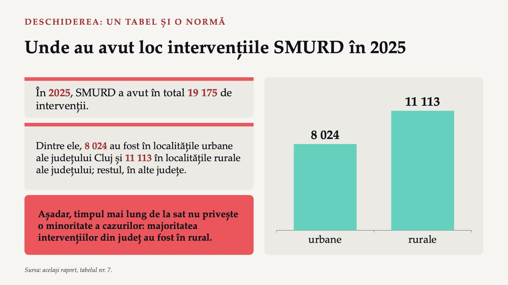
5 / 70Același raport arată unde au avut loc intervențiile. Din cele 19 175 de intervenții SMURD, 8 024 au fost în localități urbane ale județului și 11 113 în localități rurale; restul, în alte județe. După calculul din note, 58,1% dintre intervențiile SMURD din județ au fost în rural. Cu toate tipurile de echipaje, ruralul județului a însumat 54,6% din intervenții.
Norma: ce cere Legea nr. 95/2006, titlul IV
![DESCHIDEREA: UN TABEL ȘI O NORMĂ Norma: ce cere Legea nr. 95/2006, titlul IV Echipajele de urgență sau de terapie intensivă trebuie să ajungă în cel mult 15 minute în urban, la cel puțin 90% din cazuri, și în cel mult 20 de minute în rural, la cel puțin 75% din cazuri. Echipajele de prim ajutor calificat trebuie să ajungă în cel mult 8 minute în urban, la cel puțin 90% din cazuri, și în cel mult 12 minute în rural, la cel puțin 75% din cazuri. Primul ajutor calificat îl acordă personal paramedical, instruit anume, fără pregătire medicală. Timpul se socotește de la apelul de urgență până la sosirea la locul intervenției.](diapozitive/C15/006.jpg) 6 / 70
6 / 70Legea fixează două perechi de praguri. Prima privește echipajele de urgență sau de terapie intensivă: 15 minute în zonele urbane, la cel puțin 90% din cazurile de urgență, și 20 de minute în zonele rurale, la cel puțin 75% din cazuri. A doua privește echipajele de prim ajutor calificat: 8 minute în urban și 12 minute în rural, cu aceleași procente. În ambele, timpul curge de la apelul de urgență.
Norma are patru elemente
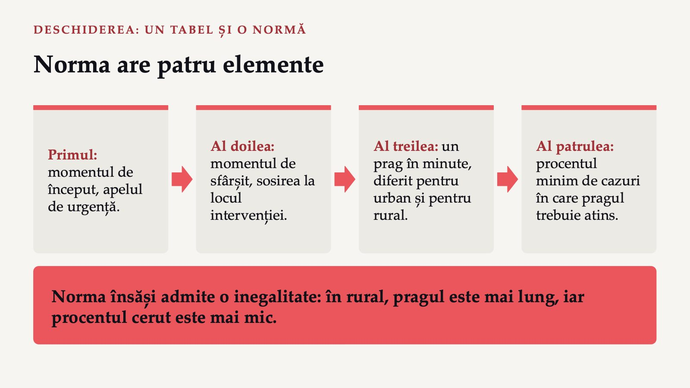
7 / 70Țineți minte aceste patru elemente; le folosim până la sfârșitul ședinței. Observați că legea însăși admite o inegalitate între urban și rural: în rural, pragul este mai lung, iar procentul cerut este mai mic.
?
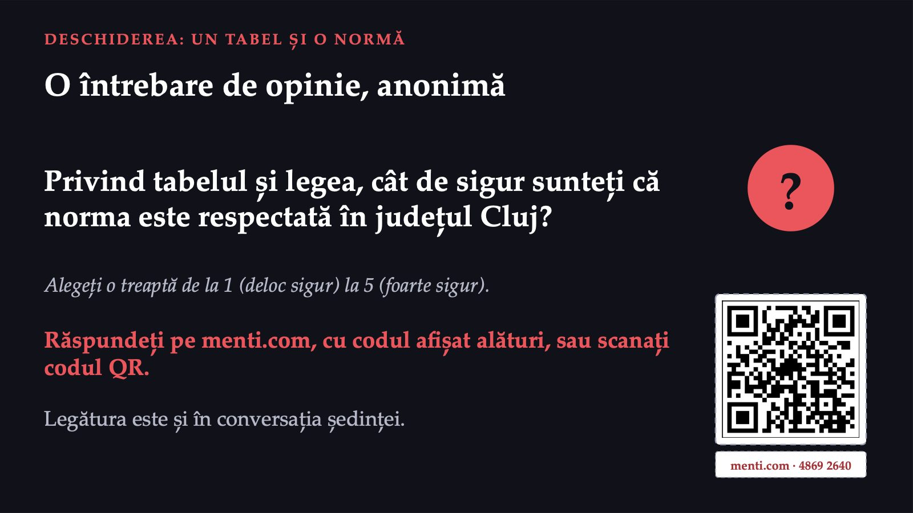
8 / 70Întrebarea cere o opinie și nu se notează. Aveți în față tabelul și legea, atât cât le-am citit până acum. Alegeți o treaptă de la 1 la 5.
La prima vedere, norma pare respectată
![CE SE POATE ȘI CE NU SE POATE CITI DIN ALĂTURAREA LOR La prima vedere, norma pare respectată Dacă sala a fost mai degrabă sigură (4 sau 5): cifrele vă dau, la prima vedere, dreptate. Media SMURD din 2025 este de 12:29 în urban, sub pragul de 15 minute, și de 18:29 în rural, sub pragul de 20 de minute. Dacă sala a fost mai degrabă nesigură (1 sau 2): aveți un motiv bun. Concluzia „norma este respectată” nu se poate trage din aceste două texte. Dacă răspunsurile s-au împărțit: exact aici începe lucrul cu documentul. 12:29 15 minute 18:29 20 de minute Există patru motive, pe care le folosim ca fir al ședinței. 1 2 3 4](diapozitive/C15/009.jpg) 9 / 70
9 / 70La prima vedere, mediile SMURD din 2025 sunt sub pragurile pentru echipajele de urgență. Concluzia că norma este respectată nu se poate însă trage din aceste două texte. Motivele sunt patru și le luăm pe rând.
Primul motiv: raportul nu spune cum a măsurat timpul de răspuns
![CE SE POATE ȘI CE NU SE POATE CITI DIN ALĂTURAREA LOR Primul motiv: raportul nu spune cum a măsurat timpul de răspuns 1 2 3 4 Nu aflăm de când începe măsurătoarea: de la apel, de la alertarea echipajului sau de la plecarea din stație. Legea numără de la apel. Normele de aplicare ale legii numără altfel pentru echipajele de prim ajutor calificat fără capacitate de evacuare, adică fără posibilitatea de a transporta pacientul: „încât timpul de sosire să fie de cel mult 8 minute de la plecarea la solicitare”. Pentru aceeași intervenție, un timp măsurat de la plecare iese mai scurt decât unul măsurat de la apel.](diapozitive/C15/010.jpg) 10 / 70
10 / 70În textul raportului nu se găsește de când începe măsurătoarea. Legea numără de la apel. Normele de aplicare a titlului IV folosesc, pentru un tip de echipaj, altă formulare: de la plecarea la solicitare. Între apel și plecare trec preluarea apelului, stabilirea priorității și alertarea. Pentru aceeași intervenție, cele două măsurători dau timpi diferiți.
Al doilea motiv: raportul dă medii, iar legea cere un procent de cazuri
 11 / 70
11 / 70Legea nu cere o medie; cere ca un procent din cazuri să fie sub prag. Aceeași medie poate ascunde o situație în care aproape toate cazurile sunt la timp sau una în care multe cazuri îndepărtate depășesc cu mult pragul și sunt compensate de cazurile de lângă stație. Tabelul nu ne lasă să le deosebim.
Al treilea motiv: nu știm cărui prag îi corespunde coloana „SMURD”
![CE SE POATE ȘI CE NU SE POATE CITI DIN ALĂTURAREA LOR Al treilea motiv: nu știm cărui prag îi corespunde coloana „SMURD” 1 2 3 4 Prin lege, SMURD are două feluri de echipe: de reanimare, cu personal medical, și de prim ajutor calificat, cu personal paramedical. Pentru primele, pragurile sunt 15 și 20 de minute; pentru celelalte, 8 și 12 minute. Raportul nu le desparte în tabelul timpilor. Din cele 18 655 de intervenții de „ajutor medical de urgență”, 11 795 sunt „afecțiuni medicale generale”, iar 1 002 sunt transporturi medicalizate între spitale. Raportul nu spune câte dintre ele intră în coloana „SMURD”.](diapozitive/C15/012.jpg) 12 / 70
12 / 70Dacă o parte din intervențiile numărate la SMURD sunt ale echipajelor de prim ajutor calificat, pentru ele pragurile sunt 8 și 12 minute, nu 15 și 20. Raportul arată că amestecul este posibil: paramedicii inspectoratului încadrează ambulanțe de tip B2, iar din intervențiile trecute la ajutor medical de urgență, cele mai multe sunt afecțiuni medicale generale. Raportul nu spune câte dintre ele intră în media din tabel. Dacă media le cuprinde pe toate, cum sugerează titlul tabelului, ea adună urgențe, afecțiuni generale și transferuri.
Al patrulea motiv: rapoarte diferite dau cifre diferite pentru același an
 13 / 70
13 / 70Același inspectorat, același an, două rapoarte, două valori. Până la o explicație a instituției, nu punem alături cifre din rapoarte diferite. Pentru un medic de sănătate publică, aceasta este o verificare obișnuită: înainte de a vorbi despre o tendință, ne uităm dacă seria vine dintr-o singură sursă, cu o singură definiție.
?
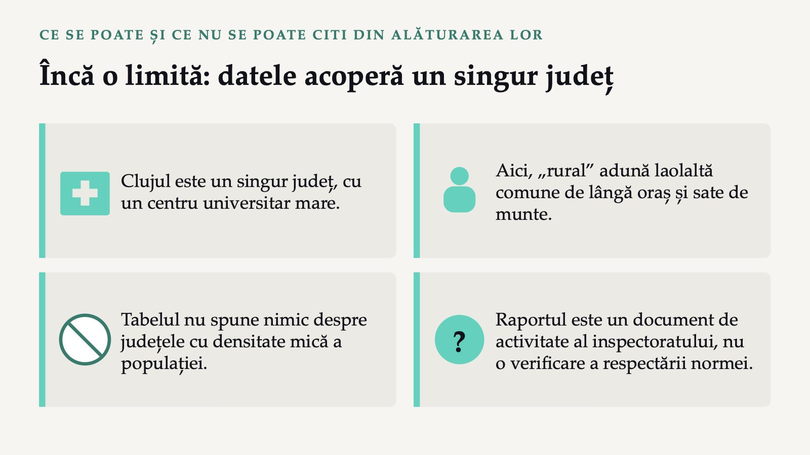
14 / 70Tabelul nu spune nimic despre județele cu densitate mică a populației și nici despre localitățile izolate din interiorul județului Cluj. Comparațiile între județe care circulă în presă nu au fost verificate la sursa primară și nu le folosim. Și încă ceva: raportul nu a fost scris ca să răspundă la întrebarea noastră; este un document de activitate.
?
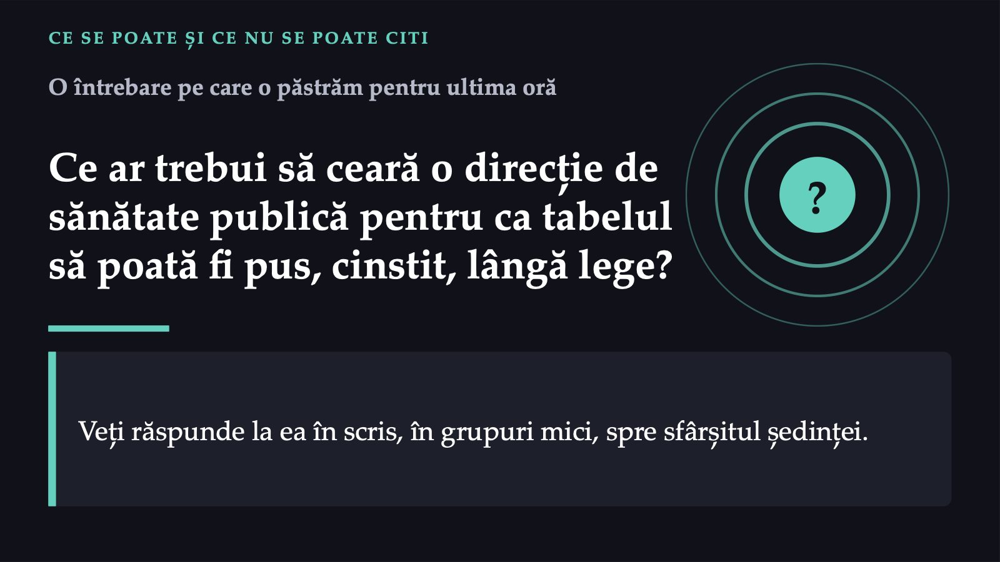
15 / 70Păstrați întrebarea. În ultima oră răspundeți la ea în scris, în grupuri mici. Până atunci parcurgem tema: de unde vine sistemul de urgență, din ce este făcut și ce dovezi avem despre el.
?
![ÎNTREBĂRILE TEMEI ȘI CRONOLOGIA Teza prezentării temei și cele patru întrebări care decurg din ea Teza: SMURD ar fi singura reformă din sănătate care a reușit cu adevărat în România de după 1989, pornită dintr-o inițiativă individuală și devenită sistem național, cu efect asupra mortalității prin traumatisme, dar numai în orașe. ? De ce era nepotrivit serviciul de salvare dinainte de 1990? ? Care sunt componentele sistemului de azi și ce dovezi avem că funcționează? ? Care îi sunt limitele geografice, financiare și instituționale? ? De ce a reușit această schimbare acolo unde altele n-au reușit?](diapozitive/C15/016.jpg) 16 / 70
16 / 70Aceasta este teza prezentării temei, o teză tare. Din ea decurg patru întrebări. Le păstrăm ca întrebări. Ca afirmații, le verificăm pe rând și spunem deschis unde sursele consultate nu ajung.
Cronologia, corectată după surse
![ÎNTREBĂRILE TEMEI ȘI CRONOLOGIA Cronologia, corectată după surse 1948–1989 Între 1948 și 1989 a funcționat serviciul de salvare, organizat teritorial, cu rol mai ales de transport. 1990 În 1990 a fost înființat SMURD; anul este confirmat de surse. 2003–2006 Între 2003 și 2006, serviciul s-a extins la nivel național. 2006–2007 În 2006–2007 a venit reglementarea: Legea nr. 95/2006, titlul IV, și Ordinul ministrului sănătății nr. 1706/2007. 2012 Pentru 2012, prezentarea relatează un episod cunoscut din spațiul public, pentru care nu s-a găsit niciun act oficial.](diapozitive/C15/017.jpg) 17 / 70
17 / 70Cronologia prezentării are cinci momente. Două corecturi. Ordinul din 2007 care reglementează unitățile și compartimentele de primire a urgențelor este Ordinul nr. 1706/2007; numărul din prezentarea veche nu se regăsește pe Portalul Legislativ. Iar protocolul de triaj aprobat în 2019 este altul decât sistemul Manchester, de care vorbea prezentarea. Pentru anul 1990, sursele confirmă anul; locul, persoana și data primului elicopter nu se regăsesc în sursele consultate.
Salvarea dinainte de 1990, așa cum o descrie prezentarea
 18 / 70
18 / 70Prezentarea descrie serviciul de salvare din perioada socialistă prin funcția lui: transportul. Consecința clinică pe care o formulează este că un stop cardiac produs în afara spitalului nu putea fi tratat la locul lui. Luăm această descriere drept ipoteza de lucru a prezentării: sursele consultate nu descriu serviciul de salvare dinainte de 1990, iar lucrările citate de prezentare nu au fost citite.
O distincție care a rămas în lege: a transporta nu înseamnă a trata
![SALVAREA DINAINTE DE 1990 ȘI ÎNFIINȚAREA SMURD O distincție care a rămas în lege: a transporta nu înseamnă a trata Un serviciu care transportă pacientul este altceva decât un serviciu care îl tratează la locul evenimentului. Transportul sanitar neasistat privește pacienții care nu sunt în stare critică și nu au nevoie de monitorizare pe drum. Transportul medical asistat înseamnă monitorizare și îngrijiri pe drum, asigurate de medic sau de asistent medical. Ambulanța de tip C duce pacientul critic, cu un echipaj condus obligatoriu de un medic. Ambulanța de tip B servește intervenției de urgență și transportului asistat.](diapozitive/C15/019.jpg) 19 / 70
19 / 70Pentru medicul de sănătate publică, partea utilă a acestei istorii este distincția de concept, care se regăsește azi în lege. Legea desparte chiar în definiții transportul neasistat de cel asistat și leagă tipul de ambulanță de nivelul de îngrijire.
?
![SALVAREA DINAINTE DE 1990 ȘI ÎNFIINȚAREA SMURD Înființarea SMURD: ce povestește prezentarea și ce confirmă sursele ? Prezentarea povestește inițiativa unui medic și a unei echipe de voluntari, la început fără finanțare publică, cu donații și cu sprijinul autorităților locale. Sursele confirmă anul înființării, 1990. Profilul României din 2016, publicat de Observatorul European al Sistemelor și Politicilor de Sănătate, notează, citând Banca Mondială, că dezvoltarea SMURD era considerată unul dintre cele mai bune exemple din regiune. Locul, persoanele, finanțarea de început și data primului elicopter nu se regăsesc în sursele consultate.](diapozitive/C15/020.jpg) 20 / 70
20 / 70Din relatarea prezentării, sursele consultate confirmă două lucruri: anul înființării și aprecierea de ansamblu a unei evaluări externe. Fraza despre „cea mai reușită reformă”, pe care prezentarea veche o dădea între ghilimele, nu a fost găsită în textul profilului și nu o cităm. Celelalte detalii pot fi adevărate, dar nu sunt în sursele citite.
Ce este SMURD azi, după Legea nr. 95/2006, art. 92 alin. (1) lit. t)
![SALVAREA DINAINTE DE 1990 ȘI ÎNFIINȚAREA SMURD Ce este SMURD azi, după Legea nr. 95/2006, art. 92 alin. (1) lit. t) „Serviciul mobil de urgență, reanimare și descarcerare, denumit în continuare SMURD - unitatea de intervenție publică integrată, de importanță strategică, fără personalitate juridică, având în structura sa echipe integrate de reanimare, specializate în acordarea asistenței medicale și tehnice de urgență, precum și echipe cu personal paramedical, specializat în acordarea primului ajutor calificat.” SMURD este un serviciu public și integrat, adică adună personal din instituții diferite. Nu are personalitate juridică, adică nu este o instituție de sine stătătoare, cu buget și conducere proprii. Are două feluri de echipe: de reanimare, cu personal medical, și de prim ajutor calificat, cu personal paramedical.](diapozitive/C15/021.jpg) 21 / 70
21 / 70Definiția legală decide mai multe întrebări de mai departe, de aceea o citim integral. Pe ecran sunt cele trei urmări care ne interesează. Adaug una: SMURD funcționează în cadrul inspectoratelor pentru situații de urgență, în colaborare cu spitalele județene și regionale și cu autoritățile publice locale.
De ce a reușit SMURD, după prezentare: șase ipoteze
![SALVAREA DINAINTE DE 1990 ȘI ÎNFIINȚAREA SMURD De ce a reușit SMURD, după prezentare: șase ipoteze 1 2 3 Primele trei: voința și competența tehnică a inițiatorului, finanțarea alternativă, la început fără dependență de bugetul Ministerului Sănătății, și colaborarea cu pompierii. 4 5 6 Celelalte trei: standarde clare, măsurarea rezultatelor și ocolirea capturii politice, adică evitarea situației în care serviciul ajunge controlat de interese politice. Două dintre ele se pot pune la probă pe documentul ședinței. Standardul există, în lege; măsurarea publicată nu folosește însă indicatorul din standard.](diapozitive/C15/022.jpg) 22 / 70
22 / 70Prezentarea numește forma juridică de adineauri „modelul hibrid” și vede în ea o sursă de rezistență: dacă un partener slăbește, ceilalți compensează. Este o interpretare plauzibilă, nu un rezultat măsurat. Cele șase explicații le reținem ca ipoteze. Două dintre ele, standardele și măsurarea, le-am pus deja la probă pe tabelul din deschidere.
Legea deosebește trei trepte de ajutor, după cine îl acordă și cu ce
 23 / 70
23 / 70Legea deosebește trei trepte, după cine acordă ajutorul și cu ce. Primul ajutor de bază îl poate acorda oricine, chiar o persoană neinstruită, la indicațiile dispeceratului. Primul ajutor calificat îl acordă personal paramedical cu formare specială, în echipe, într-un cadru instituționalizat. Asistența medicală de urgență este a personalului medical.
Două precizări ale legii
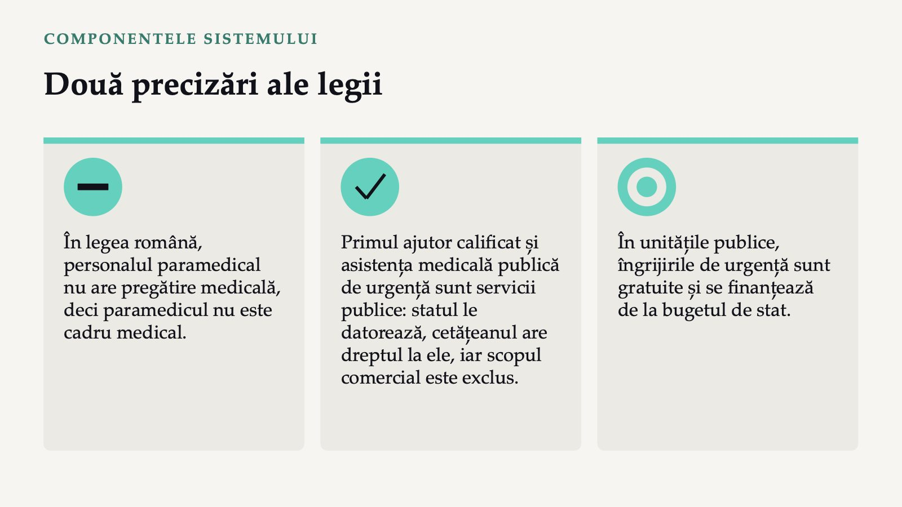
24 / 70Observați diferența față de uzul din alte țări și față de prezentarea veche, care așeza paramedicul între infirmier și medic. În legea română, paramedicul este instruit anume să acorde primul ajutor calificat și nu este cadru medical. A doua precizare privește regimul juridic: serviciul este public și nu poate avea scop comercial. Există și servicii private de urgență, obligate să spună limpede în reclame că apelul și serviciile se plătesc.
Cine intervine înainte de spital: două structuri, cu subordonări diferite
![COMPONENTELE SISTEMULUI Cine intervine înainte de spital: două structuri, cu subordonări diferite Faza prespitalicească este îngrijirea acordată de la apel până la sosirea pacientului la spital. Serviciul de ambulanță județean este o unitate sanitară publică, cu personalitate juridică, coordonată de Ministerul Sănătății și de direcția de sănătate publică. SMURD funcționează în cadrul inspectoratului pentru situații de urgență, adică în Ministerul Afacerilor Interne. În același județ lucrează amândouă.](diapozitive/C15/025.jpg) 25 / 70
25 / 70Asistența medicală publică de urgență din faza prespitalicească este asigurată de serviciile de ambulanță județene și de echipajele integrate ale SMURD. Serviciul de ambulanță are un compartiment de asistență medicală de urgență și transport medical asistat și unul de consultații de urgență la domiciliu și transport neasistat. Profilul Observatorului European spune același lucru despre subordonare: ambulanțele, la Ministerul Sănătății și la direcțiile de sănătate publică; SMURD, la Ministerul Afacerilor Interne.
Înapoi la tabel: ce lipsește din el
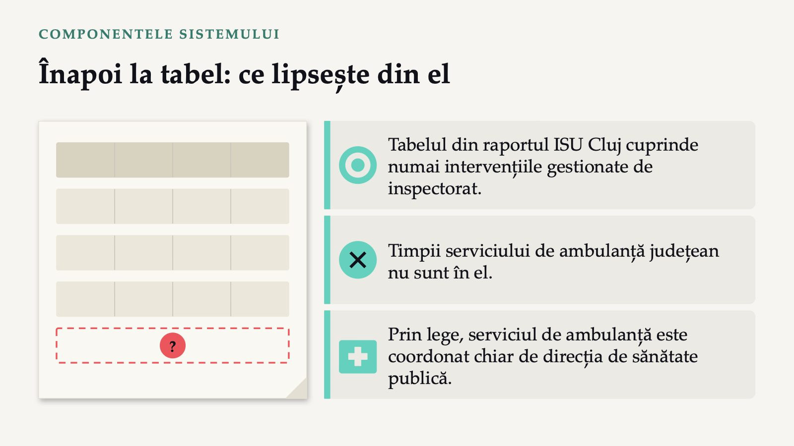
26 / 70Pentru cazul nostru, urmarea este directă. Cine vrea imaginea întreagă a județului are nevoie și de datele celeilalte structuri. Iar instituția care o coordonează este chiar direcția de sănătate publică, adică instituția pentru care scrieți propunerea în ultima oră.
Dispeceratul hotărăște ce echipaj pleacă, după un cod de culoare
![COMPONENTELE SISTEMULUI Dispeceratul hotărăște ce echipaj pleacă, după un cod de culoare ? Apelul la 112 ajunge la centrul unic pentru apeluri de urgență, apoi la dispeceratul medical de urgență. Codul roșu înseamnă o urgență majoră, cu risc vital: pleacă o ambulanță cu echipament de terapie intensivă și cu medic. Codul galben înseamnă o urgență cu potențial de risc vital: pleacă o ambulanță cu defibrilator, cu medic sau cu asistent medical. Codul verde privește cazurile care nu sunt urgențe. Aceste trei coduri sunt ale dispeceratului; nu sunt nivelurile de triaj din spital.](diapozitive/C15/027.jpg) 27 / 70
27 / 70Dispeceratul medical este coordonat de personal cu pregătire medicală superioară și se află în serviciu permanent. Operatorul hotărăște ce serviciu trimite, ambulanța sau SMURD, după gravitatea urgenței. La trimitere se folosesc trei coduri de culoare. Rețineți că sunt ale dispeceratului; revenim la ele la triaj, unde unele culori se repetă cu alt înțeles.
În spital, urgența este primită la UPU sau la CPU
![COMPONENTELE SISTEMULUI În spital, urgența este primită la UPU sau la CPU Unitatea de primire a urgențelor (UPU) este o secție a unui spital județean sau regional. Compartimentul de primire a urgențelor (CPU) se află într-un spital orășenesc sau municipal. Amândouă au aceeași destinație: triajul, evaluarea și tratamentul de urgență. La spitalele Ministerului Sănătății și ale autorităților locale, legea nu le deosebește după program sau după dotare, ci după nivelul spitalului. Spitalele ministerelor cu rețea sanitară proprie pot avea fie una, fie cealaltă.](diapozitive/C15/028.jpg) 28 / 70
28 / 70În spital, urgența este primită într-o structură anume, cu personal propriu. Deosebirea dintre unitate și compartiment nu este, în definițiile legii, una de program sau de dotare declarată. La spitalele din rețeaua Ministerului Sănătății și a autorităților locale este una de nivel al spitalului. Spitalele ministerelor și ale instituțiilor cu rețea sanitară proprie apar în ambele definiții. Legea cunoaște și compartimentul de primire a urgențelor de specialitate, din spitalele de specialitate.
Ce cere Ordinul ministrului sănătății nr. 1706/2007 în UPU și cum așază legea spitalele pe trei trepte
![COMPONENTELE SISTEMULUI Ce cere Ordinul ministrului sănătății nr. 1706/2007 în UPU și cum așază legea spitalele pe trei trepte Ordinul definește camera de resuscitare: aici sunt îngrijiți pacienții în stare critică, cu funcții vitale instabile. În lista ordinului, personalul UPU începe cu medicii în specialitatea medicină de urgență și cu medicii rezidenți în această specialitate. Spitalul local rezolvă o parte din urgențe, iar pe celelalte le stabilizează și le transferă. Spitalul județean de urgență asigură îngrijirile definitive pentru majoritatea cazurilor din județ. Spitalul regional de urgență primește cazurile complexe din județele arondate, adică repartizate lui.](diapozitive/C15/029.jpg) 29 / 70
29 / 70Ordinul reia definițiile din lege și reglementează conducerea și organizarea acestor structuri. Cifrele de dotare din prezentarea veche nu le reproducem: nu au fost căutate în anexele ordinului. Legea așază spitalele pe trei trepte de competență în urgență; pe această scară se sprijină transferul dintre spitale.
Prespitalul și spitalul depind unul de altul
![COMPONENTELE SISTEMULUI Prespitalul și spitalul depind unul de altul Fără un prespital bun, structura de primire primește pacienți nestabilizați. Fără o structură de primire bună, echipajul predă pacientul într-un gol. La sosire, pacientului i se deschide fișa individuală de urgență, la care se atașează o copie a fișei completate de echipaj înainte de spital. Apoi pacientul este internat, trimis la un spital de competență mai înaltă, ținut în spitalizare de zi până la 12 ore sau externat și îndrumat către medicul de familie.](diapozitive/C15/030.jpg) 30 / 70
30 / 70Prezentarea formulează simplu de ce contează ambele componente. Profilul din 2026 al Observatorului European descrie parcursul documentar al pacientului: fișa deschisă în camera de triaj, completată și semnată de toți medicii care îl îngrijesc, și fișa din prespital, separată, din care o copie se atașează.
Telemedicina de urgență există, iar banii vin pe două linii ministeriale
![COMPONENTELE SISTEMULUI Telemedicina de urgență există, iar banii vin pe două linii ministeriale Un sistem de telemedicină, adică de legătură medicală la distanță, leagă ambulanțele de 131 de structuri de primire a urgențelor din spitale. Sistemul funcționează și în zonele montane izolate și în Delta Dunării. Asistența medicală publică de urgență se finanțează din bugetul Ministerului Sănătății, din cel al Ministerului Afacerilor Interne, din bugetele celorlalte ministere cu rețea sanitară, din donații și din sponsorizări. Serviciile de ambulanță județene sunt finanțate de la bugetul de stat, prin Ministerul Sănătății.](diapozitive/C15/031.jpg) 31 / 70
31 / 70Prezentarea veche trecea telemedicina de urgență la capitolul lucrurilor încă nefăcute. După profilul din 2026, afirmația nu mai este la zi: sistemul există, dezvoltat printr-un program finanțat de Banca Mondială. Despre finanțare, legea enumeră sursele; rețineți că banii vin pe două linii ministeriale, ca și subordonarea.
?
 32 / 70
32 / 70Prezentarea veche descria triajul din spitalele românești ca pe sistemul Manchester. Protocolul aflat pe Portalul Legislativ este altul: protocolul național aprobat în 2019. Îl descriem după textul lui.
Cine face triajul: un asistent medical anume pregătit
![TRIAJUL ÎN STRUCTURILE DE PRIMIRI URGENȚE Cine face triajul: un asistent medical anume pregătit 3 ani o singură dată 2 asistenți 2 minute Asistentul medical de triaj are pregătire specifică și cel puțin 3 ani de experiență în asistența medicală de urgență. Pacientul este triat o singură dată, la intrare. Pe fiecare tură sunt cel puțin 2 asistenți de triaj, iar un asistent nu face triaj mai mult de 6 ore fără întrerupere. Protocolul recomandă ca triajul unui pacient să dureze, în medie, cel mult 2 minute. ? De ce nu un medic? Răspunsul îl dă chiar protocolul.](diapozitive/C15/033.jpg) 33 / 70
33 / 70Protocolul explică de ce triajul nu îl face un medic. Alocarea unui medic la triaj este socotită o risipă de resurse, iar medicul va fi tentat să consulte pacientul mai amănunțit, ceea ce întârzie primul contact al celorlalți pacienți cu personalul medical.
Algoritmul de triaj are patru întrebări
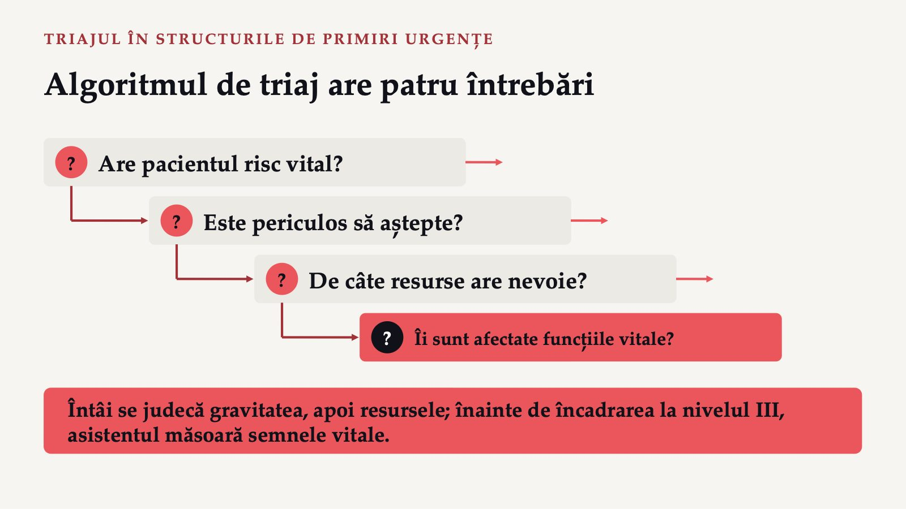
34 / 70Algoritmul are patru întrebări. Protocolul folosește două criterii, în ordine: întâi gravitatea, apoi, la pacienții stabili, numărul de resurse de care au nevoie. După resurse vine o verificare: înainte de încadrarea la nivelul III, asistentul măsoară semnele vitale, iar dacă nu sunt în limitele normale pentru vârsta pacientului, ia în considerare trecerea lui la nivelul II.
Cele cinci niveluri de triaj și timpul maxim până la preluarea în zona de tratament
 35 / 70
35 / 70Timpul maxim de preluare crește de la 0 minute la nivelul I la 240 de minute la nivelul V. Nivelul V cuprinde și persoanele care vin pentru o vaccinare, cazurile sociale fără acuze clinice și problemele clinico-administrative, cum sunt certificatele și rețetele. Faptul că protocolul le prevede un loc arată că structurile de urgență primesc, în mod curent, și astfel de solicitări.
?
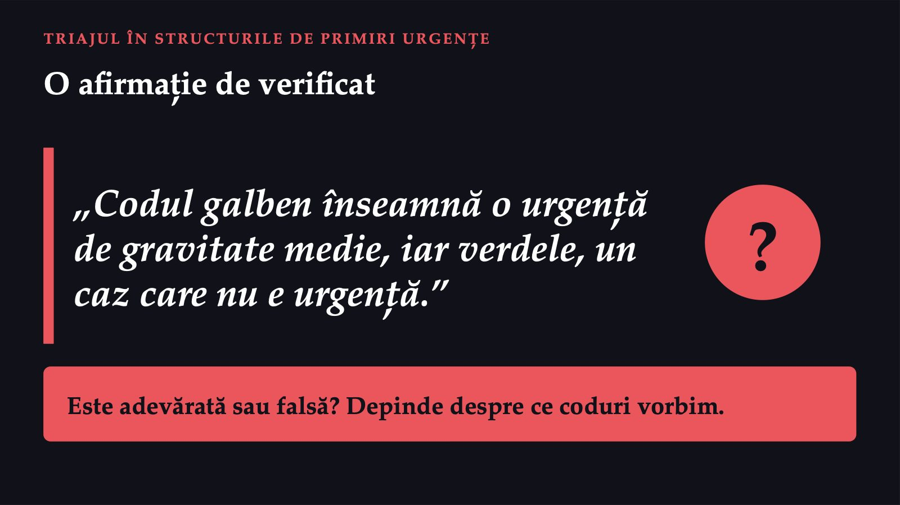
36 / 70Citiți afirmația. Ați auzit-o, probabil, de multe ori. Pe diapozitivul următor punem alături cele două feluri de coduri.
Aceeași culoare înseamnă altceva în două instrumente
 37 / 70
37 / 70La trimiterea ambulanței, codurile sunt trei, iar verdele privește cazurile care nu sunt urgențe. În protocolul de triaj din spital, nivelurile sunt cinci, iar verdele este un pacient urgent. Principiul este general: aceeași culoare poate însemna lucruri diferite în două instrumente ale aceluiași sistem.
?
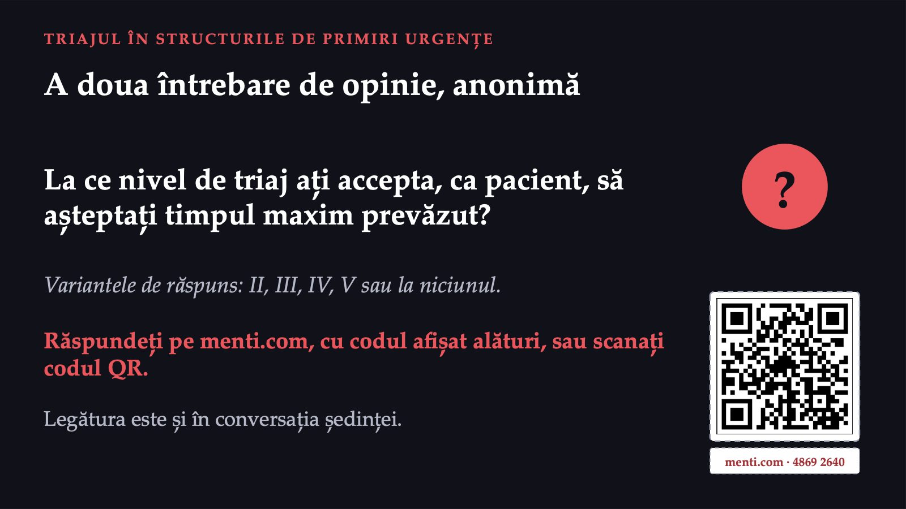
38 / 70A doua întrebare de opinie. Sunteți, de data aceasta, pacientul din sala de așteptare. Nicio variantă nu e greșită.
Pauză
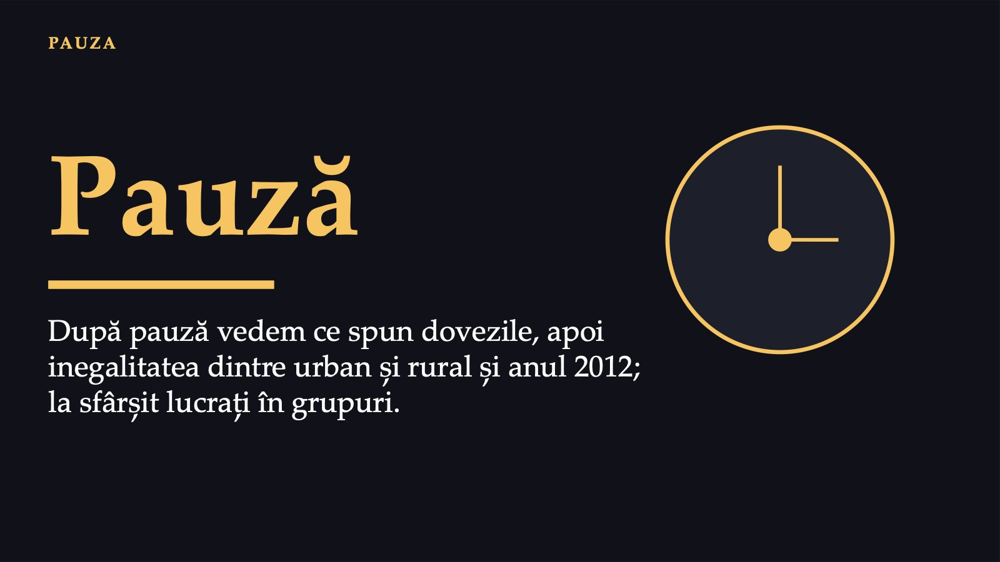
39 / 70Facem o oprire scurtă. Apoi vedem ce spun dovezile despre timpul de răspuns și supraviețuire, apoi inegalitatea dintre urban și rural, și încheiem cu lucrul în grupuri.
?
![DOVEZILE: CE S-A MĂSURAT Ce susține prezentarea și unde își recunoaște singură limita Prezentarea susține că SMURD a scăzut mortalitatea prin traumatisme în centrele acoperite și că timpii de răspuns din orașe sunt de ordinul celor europeni. Mai susține că, înainte de spital, după defibrilare, circulația spontană a fost reluată, adică inima a început din nou să bată singură, și că decesele rutiere au scăzut. ? Limita o spune chiar prezentarea: datele sunt ale serviciului, nu există studii cu grup de comparație, iar dovezile sunt observaționale, adică provin din urmărirea cazurilor, fără un experiment controlat. Rapoartele anuale ale SMURD nu au fost găsite, așa că nicio cifră din această listă nu a putut fi confirmată.](diapozitive/C15/040.jpg) 40 / 70
40 / 70Prezentarea enumeră dovezile reușitei și tot ea își recunoaște limita. Rapoartele anuale la care trimite pentru cifre nu au fost găsite și citite, așa că nu reluăm nicio cifră din listă. Ce putem face este să vedem ce spun sintezele recente despre întrebarea de fond: un timp de răspuns mai scurt înseamnă mai mulți supraviețuitori?
Ce spune cea mai recentă sinteză: Hansen și colaboratorii, „PLOS One”, 2025
![DOVEZILE: CE S-A MĂSURAT Ce spune cea mai recentă sinteză: Hansen și colaboratorii, „PLOS One”, 2025 115 studii 691 056 de pacienți 11,5% Este o revizuire sistematică cu metaanaliză, adică o adunare ordonată a studiilor pe aceeași întrebare, cu rezultatele combinate statistic. A cuprins 115 studii și 691 056 de pacienți. În studii, timpul de răspuns a variat între 1,10 și 48,62 minute, iar rata mediană de supraviețuire a fost de 11,5%. ? Concluzia autorilor: dovezile nu ajung pentru a deduce o asociere între timpul de răspuns și supraviețuire, iar certitudinea lor este foarte scăzută. Definiția folosită în literatură: timpul de la primirea apelului de către dispecerat până la sosirea vehiculului la locul evenimentului.](diapozitive/C15/041.jpg) 41 / 70
41 / 70Intuiția clinică spune că un timp mai scurt înseamnă mai mulți supraviețuitori, iar prezentarea veche o afirma categoric. Cea mai recentă sinteză consultată este mai prudentă. A inclus pacienți cu stop cardiac în afara spitalului, traumatisme și înec, adulți și copii. Într-o metaanaliză pe subgrupuri, autorii au găsit o corelație pozitivă în populații selectate, mici. Observați și definiția: este aceeași construcție ca în legea română, de la apel la sosire.
Un registru european al stopului cardiac produs în afara spitalului: EuReCa THREE
![DOVEZILE: CE S-A MĂSURAT Un registru european al stopului cardiac produs în afara spitalului: EuReCa THREE 28 de țări 45 251 de cazuri 12,2 minute 7,5% Registrul a cules date între 1 septembrie și 30 noiembrie 2022, din 28 de țări. Au fost 45 251 de cazuri confirmate, dintre care 32 033 tratate de serviciile medicale de urgență. Timpul mediu de răspuns a fost de 12,2 minute, cu un interval raportat între 6,4 și 22,8 minute. Supraviețuirea globală a fost de 7,5%, cu un interval raportat între 3,1% și 35,0%. Autorii găsesc asocieri clare între timpul de răspuns și probabilitatea de supraviețuire.](diapozitive/C15/042.jpg) 42 / 70
42 / 70Al doilea reper este un registru european al stopului cardiac produs în afara spitalului. Din el s-a citit numai rezumatul. Rezumatul nu spune între ce unități sunt luate intervalele, nu numește țările și nu s-a putut verifica dacă România este printre ele. Oricum ar fi luat intervalul, o variație de la simplu la mai mult decât triplu în același registru arată că nici „standardul european” nu este un singur număr.
Cele două lucrări nu se contrazic atât cât pare
 43 / 70
43 / 70În clasificarea folosită la tema despre acreditare, cu structură, proces și rezultat, timpul de răspuns face parte din indicatorii de proces. Legătura lui cu rezultatul nu este demonstrată în general. Mai rămâne o deosebire pe care prezentarea veche o ștergea uneori: că un echipaj cu defibrilator poate obține la locul evenimentului ceea ce un serviciu de transport nu poate este o afirmație de mecanism. Că un serviciu anume, într-o țară anume, a redus mortalitatea este o afirmație de efect, care cere date pe care nu le avem în față.
?
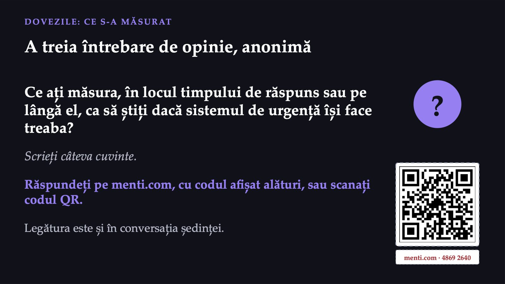
44 / 70A treia întrebare de opinie, cu text liber. Scrieți în câteva cuvinte ce ați măsura. Țineți minte ce ați scris; puteți folosi asta la sfârșit, când alegeți indicatorul.
Cine a câștigat și cine a pierdut, pe teritoriu
![CÂȘTIGĂTORII ȘI PERDANȚII TERITORIALI; ANUL 2012 Cine a câștigat și cine a pierdut, pe teritoriu Teza prezentării: au câștigat orașele mari; au pierdut comunitățile rurale izolate și județele cu densitate mică a populației. ? Cifrele cu care prezentarea o susține nu au fost confirmate. Mediile pe „rural” ascund tocmai extremele. Ce avem verificat este județul Cluj, în 2025: la SMURD, 18:29 minute în rural față de 12:29 în urban, o diferență de șase minute. 12:29 în urban 18:29 minute în rural o diferență de șase minute](diapozitive/C15/045.jpg) 45 / 70
45 / 70Inegalitatea există și este măsurabilă, dar ordinul ei de mărime, într-un județ cu centru universitar, este altul decât cel din prezentarea veche. De aici nu rezultă că prezentarea greșește pentru ruralul izolat: mediile ascund extremele, iar despre județele cu densitate mică nu avem niciun document. Rezultă că afirmația despre ruralul izolat are nevoie de o sursă pe care nu o avem.
Norma se poate scrie pe cazuri sau pe populație
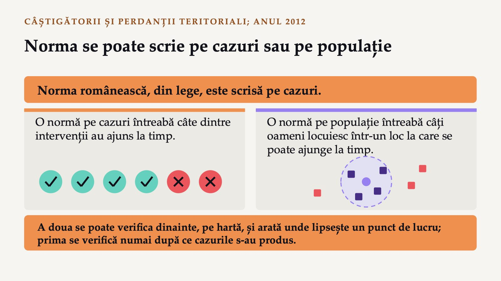
46 / 70Prezentarea veche compara situația cu o normă europeană atribuită Consiliului European de Resuscitare. Norma nu a fost găsită într-un text al Consiliului, așa că nu o cităm. Deosebirea dintre cele două feluri de norme este însă utilă și vă poate folosi la propunerea din ultima oră.
Ce soluții s-au încercat, după prezentare
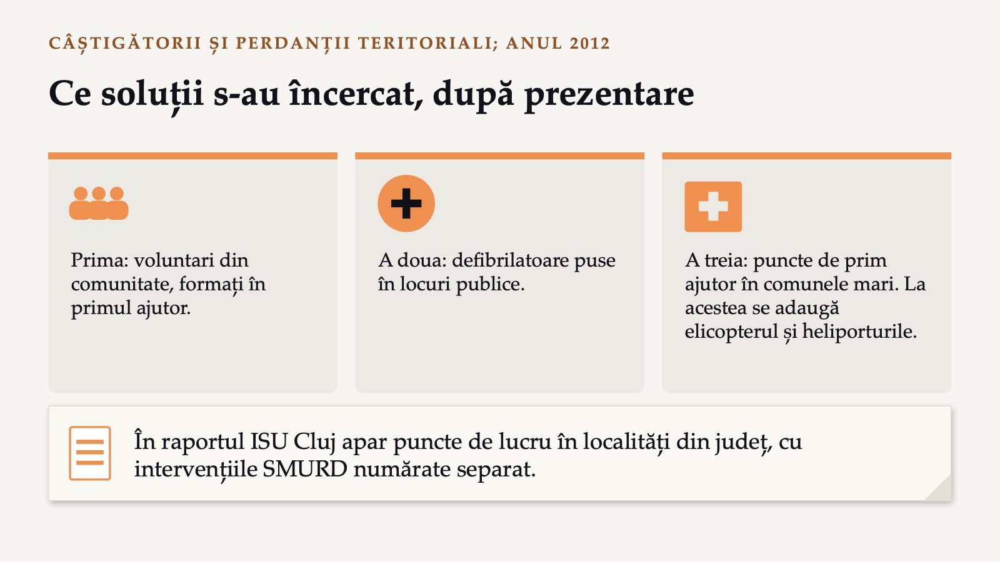
47 / 70Soluțiile sunt de trei feluri, la care se adaugă elicopterul. Raportul inspectoratului arată cum arată a treia soluție în practică: puncte de lucru în localități din județ. Datele pe puncte de lucru nu au fost analizate și nu tragem concluzii din ele. Despre heliporturi, legea prevede finanțarea lor din bugetul Ministerului Sănătății; obligația ca fiecare spital județean să aibă heliport nu a fost găsită în textul citit.
Anul 2012: o relatare a prezentării, nu un fapt verificat
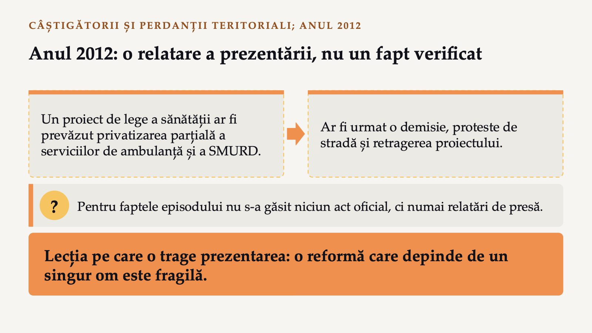
48 / 70Tot ce este pe acest diapozitiv este relatarea prezentării, nu un fapt verificat. Episodul este cunoscut din spațiul public, dar pentru faptele lui nu s-a găsit niciun act oficial: nici proiectul de lege, nici comunicatul de retragere. Îl discutăm cu această rezervă spusă explicit. Lecția pe care o scoate prezentarea este că o reformă devine durabilă abia când este așezată în lege, în protocoale și în structuri și că sprijinul public o poate apăra.
Ce ar rămâne dacă omul care a pornit schimbarea ar pleca mâine?
![CÂȘTIGĂTORII ȘI PERDANȚII TERITORIALI; ANUL 2012 Ce ar rămâne dacă omul care a pornit schimbarea ar pleca mâine? La SMURD există astăzi o definiție legală, norme de timp, o finanțare prevăzută de lege și o subordonare stabilă. o definiție legală norme de timp o finanțare prevăzută de lege o subordonare stabilă o măsurare publică a propriei norme Legea spune că primul ajutor calificat și asistența medicală publică de urgență nu pot avea scop comercial. Lipsește însă, pe documentul ședinței, o măsurare publică a propriei norme.](diapozitive/C15/049.jpg) 49 / 70
49 / 70Lecția se poate discuta și fără detaliile episodului, pe textul legii de azi. Caracterul public al serviciului nu mai depinde de o persoană, ci de un text care se schimbă numai prin lege. Nu s-a verificat când au intrat aceste alineate în lege și nu susținem că sunt urmarea episodului din 2012. Întrebarea de pe ecran o puteți pune oricărei schimbări dintr-un sistem de sănătate.
Medicina de urgență, specialitate cu rezidențiat propriu
![SPECIALITATEA, MODELELE EUROPENE, ACCIDENTELE RUTIERE, PANDEMIA Medicina de urgență, specialitate cu rezidențiat propriu Ordinul nr. 1706/2007 trece în UPU, pe primele locuri, medicii în specialitatea medicină de urgență și medicii rezidenți în această specialitate. Personalul paramedical se formează în instituțiile și centrele Inspectoratului General pentru Situații de Urgență (IGSU) sau în alte centre autorizate și acreditate. Defibrilatoarele semiautomate le pot folosi asistenții medicali instruiți și autorizați; pe cele manuale, numai medicii.](diapozitive/C15/050.jpg) 50 / 70
50 / 70Prezentarea leagă de anii 2006–2007 conturarea medicinei de urgență ca specialitate distinctă, cu rezidențiat propriu. Ordinul confirmă existența specialității și a rezidențiatului. Durata rezidențiatului și durata formării paramedicilor, așa cum le dădea prezentarea veche, nu au fost verificate și nu le reluăm.
Supraaglomerarea urgențelor poate fi, în parte, un simptom al asistenței primare slabe
![SPECIALITATEA, MODELELE EUROPENE, ACCIDENTELE RUTIERE, PANDEMIA Supraaglomerarea urgențelor poate fi, în parte, un simptom al asistenței primare slabe Serviciile de urgență sunt suprautilizate: pacienții merg direct la structurile de urgență ale spitalelor sau sună la 112. Uneori urgența este singura cale, pentru că pacientul nu are asigurare sau în zonă lipsește asistența primară, adică serviciile de prim contact, în primul rând medicul de familie. Numărul urgențelor reale este și el mare, din cauza controalelor neglijate la bolnavii cronici și a întârzierilor de diagnostic. Există două supape: consultația de urgență la domiciliu și centrele de permanență ale medicilor de familie.](diapozitive/C15/051.jpg) 51 / 70
51 / 70Procentele din prezentarea veche despre salarii, emigrare și epuizare profesională nu au putut fi confirmate. Reținem mecanismul pe care îl susține o sursă verificată, profilul din 2026 al Observatorului European. Un procent mare din solicitările la ambulanță sunt rezolvate la domiciliul pacientului și nu duc la internare. Aici tema se leagă de cele despre asistența primară.
Două modele europene și un hibrid românesc
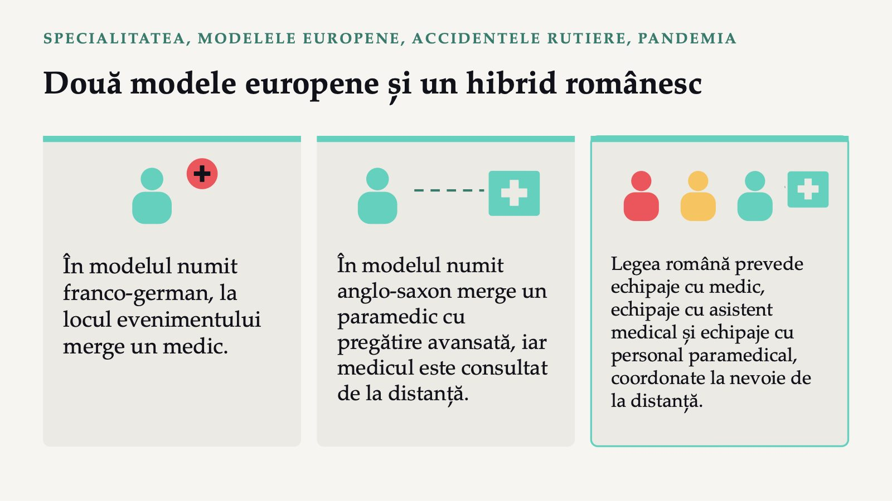
52 / 70Tipologia este un instrument de lucru răspândit, dar sursele ei nu au fost citite, iar timpii comparați pe țări din prezentarea veche nu au fost verificați. Pe textul legii putem spune de ce „hibrid” este un cuvânt potrivit pentru sistemul românesc. Legea definește chiar centre de expertiză și coordonare medicală la distanță.
Decesele pe drumurile din România și din Uniunea Europeană (Eurostat)
![SPECIALITATEA, MODELELE EUROPENE, ACCIDENTELE RUTIERE, PANDEMIA Decesele pe drumurile din România și din Uniunea Europeană (Eurostat) În România: 2 377 de decese în 2010, 1 864 în 2019, 1 545 în 2023 și 1 478 în 2024. În Uniunea Europeană, în aceiași ani: 29 611, 22 757, 20 386 și 19 933. Raportat la 100 000 de locuitori, România avea 11,7 decese în 2010 și 7,8 în 2024; Uniunea, 6,7 și 4,4. Înainte de diapozitivul următor, scrieți în conversație: în 2024, în România, au fost mai multe decese pe drumuri urbane sau pe drumuri rurale?](diapozitive/C15/053.jpg) 53 / 70
53 / 70Prezentarea veche lega scăderea deceselor rutiere de extinderea SMURD și dădea, pentru 2022, o cifră sub o mie. În seria Eurostat consultată, numărul nu coboară sub o mie în niciunul dintre anii citiți. Numărul a scăzut în România, dar rata a rămas mult peste cea a Uniunii. Scăderea are loc și în ansamblul Uniunii, în aceiași ani, ceea ce face greu de susținut că, în România, ea s-ar datora în primul rând serviciului de urgență.
În România, în 2024, cele mai multe decese rutiere au fost pe drumuri urbane
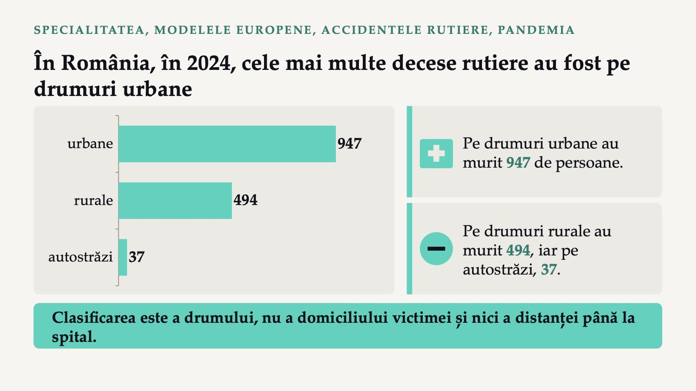
54 / 70Cifrele nu spun nimic despre timpul de răspuns. Spun doar că problema rutieră a României nu este una preponderent rurală, cum ar sugera o lectură grăbită. Lanțul de îngrijire a traumei, de la primul ajutor la locul accidentului până la centrul de traumă, corespunde treptelor de spitale din lege.
Pandemia, ca probă de efort pentru sistem
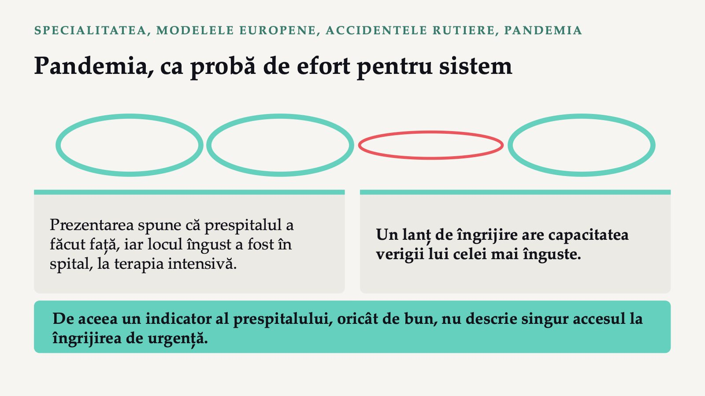
55 / 70Cifrele prezentării vechi despre paturile de terapie intensivă nu au fost verificate și nu le reluăm; pandemia are o temă dedicată în acest curs. Ideea de sistem rămâne valabilă și fără cifre. Dacă echipajul ajunge repede, iar structura de primire nu are unde trimite pacientul critic, timpul câștigat pe drum se pierde la ușa secției.
Lanțul supraviețuirii în stopul cardiac are cinci verigi
![MARTORUL, SALVAREA AERIANĂ, NUMĂRUL 112, SUBDOMENIILE Lanțul supraviețuirii în stopul cardiac are cinci verigi Verigile sunt: recunoașterea precoce și apelul de urgență, resuscitarea începută de martori, defibrilarea precoce, îngrijirile avansate și îngrijirile de după resuscitare. În registrul EuReCa THREE, circulația spontană a fost reluată la 31,2% dintre pacienți, iar supraviețuirea globală a fost de 7,5%. 31,2% 7,5% Un sfert dintre pacienți au fost ajunși de echipaj în cel mult 7 minute. Pentru ceilalți, ce se întâmplă până la sosirea echipajului depinde de cine este de față.](diapozitive/C15/056.jpg) 56 / 70
56 / 70Conceptul îl folosim ca schemă de analiză: un rezultat bun cere ca toate verigile să țină, iar primele depind de oameni care nu sunt profesioniști. Procentele de supraviețuire pe minute din prezentarea veche nu au fost verificate. Prezentarea are și un studiu de caz ilustrativ, cu doi pacienți, unul într-un oraș mare și altul într-un sat; cazurile sunt construite pentru a arăta mecanismul, iar timpii din ele nu sunt date.
?
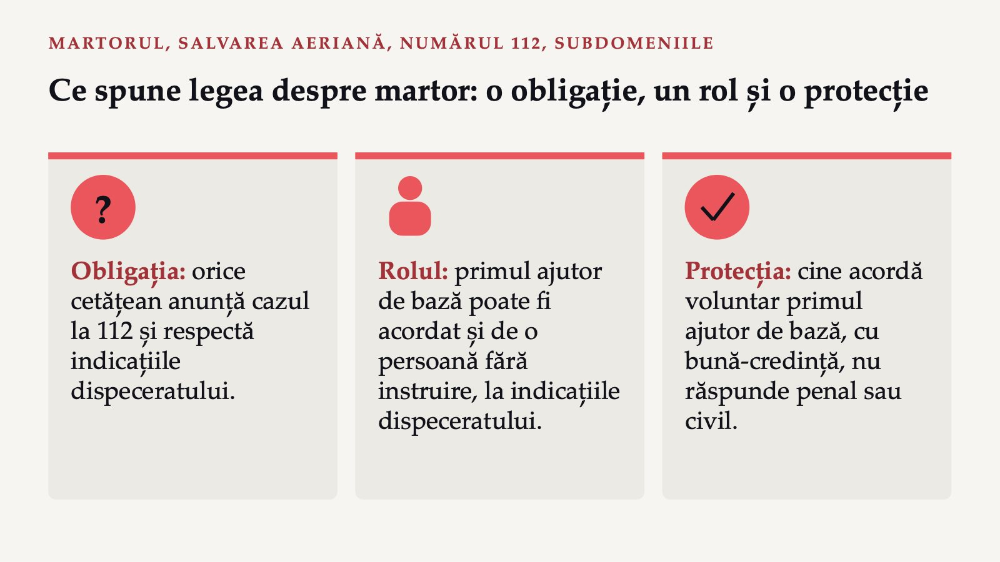
57 / 70Legea română îi dă martorului un rol și o protecție. Aceeași protecție o are personalul paramedical, pentru actele făcute cu bună-credință, în limitele competenței și cu respectarea protocoalelor. Cifrele prezentării vechi despre persoanele formate în resuscitare și despre defibrilatoarele publice nu au fost verificate. Afirmația ei de fond, că primul ajutor al martorilor este veriga cea mai ieftină și cea mai puțin finanțată, este o judecată, nu o constatare.
Salvarea aeriană: legea deosebește două feluri de misiuni
![MARTORUL, SALVAREA AERIANĂ, NUMĂRUL 112, SUBDOMENIILE Salvarea aeriană: legea deosebește două feluri de misiuni Misiunile de salvare aeriană sunt intervenții pentru o persoană a cărei viață este amenințată. Misiunile de ambulanță aeriană sunt transporturi sanitare planificate dinainte. Operatorul aerian al SMURD sunt structurile de aviație ale Ministerului Afacerilor Interne. O întrebare pentru cazul nostru: o intervenție aeriană într-un sat de munte intră în media „rurală” a timpului de răspuns? Raportul nu o spune.](diapozitive/C15/058.jpg) 58 / 70
58 / 70Prezentarea descrie elicopterele ca soluție la distanță; numărul de aparate și raza de acțiune nu au fost verificate. Legea deosebește două feluri de misiuni. Pentru cazul nostru, elicopterul ridică o întrebare de măsurare, cea de pe ultimul rând.
Numărul 112 și dispeceratul: aici începe timpul din lege
![MARTORUL, SALVAREA AERIANĂ, NUMĂRUL 112, SUBDOMENIILE Numărul 112 și dispeceratul: aici începe timpul din lege 112 Numărul 112 este operat de Serviciul de Telecomunicații Speciale, care transferă apelurile către ambulanță, SMURD, poliție, pompieri, jandarmerie și salvarea montană. Timpul din norma legală începe la dispecerat, în momentul apelului. De aceea un județ poate avea echipaje rapide și un timp total lung, sau invers. Întrebarea „de când se măsoară” arată cărei verigi îi aparține o întârziere.](diapozitive/C15/059.jpg) 59 / 70
59 / 70Dacă măsurătoarea pornește de la apel, ea cuprinde și munca dispeceratului: preluarea, întrebările, stabilirea codului, alegerea echipajului. Numărul anual de apeluri și ponderea apelurilor false, din prezentarea veche, nu au fost verificate.
Subdomeniile urgenței și transferul între spitale
![MARTORUL, SALVAREA AERIANĂ, NUMĂRUL 112, SUBDOMENIILE Subdomeniile urgenței și transferul între spitale Despre toxicologie, pediatrie și urgența obstetricală și neonatală, sursele consultate spun puțin; le găsiți rezumate în note. Transferul arată că sosirea echipajului la pacient este numai primul dintre timpii care contează. Raportul ISU Cluj dă și un „timp mediu de intervenție” al SMURD în 2025: 1:07:58 în urban și 1:20:04 în rural, în ore, minute și secunde. 1:07:58 în urban 1:20:04 în rural ? Raportul nu spune ce cuprinde acest timp.](diapozitive/C15/060.jpg) 60 / 70
60 / 70Trecem repede prin subdomenii, pentru că sursele citite spun puțin despre ele; le găsiți în note, cu ce s-a verificat și ce nu. Reținem transferul: al doilea timp care contează este timpul până la spitalul care poate trata definitiv. Raportul dă un timp mediu de intervenție, dar nu spune ce cuprinde.
?
 61 / 70
61 / 70Ultima întrebare de opinie înaintea lucrului în grupuri. Un singur lucru. Nicio variantă nu e greșită; rezultatul îl luați cu dumneavoastră în camerele de lucru.
Sarcina: o propunere pentru direcția de sănătate publică
![ACTIVITATEA: PROPUNEREA PENTRU DIRECȚIA DE SĂNĂTATE PUBLICĂ Sarcina: o propunere pentru direcția de sănătate publică Sunteți medici într-o direcție de sănătate publică județeană. Pregătiți, pentru conducerea direcției, o propunere despre accesul la ajutorul de urgență în județ. Aveți în față tabelul cu timpii medii de răspuns, tabelul cu localizarea intervențiilor și cele două alineate din Legea nr. 95/2006. Lucrați în grupuri de patru sau cinci, în camerele de lucru, în care platforma vă repartizează automat.](diapozitive/C15/062.jpg) 62 / 70
62 / 70Acum faceți ce face un medic de sănătate publică atunci când primește un asemenea raport. Lucrați în grupuri de patru sau cinci, în camere de lucru separate. Tabelele și cele două alineate de lege sunt în conversația ședinței.
Trei repere pentru lucru
![ACTIVITATEA: PROPUNEREA PENTRU DIRECȚIA DE SĂNĂTATE PUBLICĂ Trei repere pentru lucru Întâi, uitați-vă ce instituție are fiecare dată: momentul apelului, momentul plecării, momentul sosirii, mediul de rezidență și tipul echipajului. Apoi, deosebiți o măsură care schimbă măsurarea (o definiție, un indicator, o raportare) de una care schimbă serviciul (un punct de lucru, un echipaj, o instruire a populației). În sfârșit, alegeți un indicator pe care l-ați putea citi peste un an: cine îl calculează, din ce registru și pe ce unitate teritorială.](diapozitive/C15/063.jpg) 63 / 70
63 / 70Trei repere, fără a fi răspunsuri. O propunere bună este una pe care instituția numită ar putea-o pune în aplicare cu datele pe care le are sau le poate cere.
1.
![ACTIVITATEA: PROPUNEREA PENTRU DIRECȚIA DE SĂNĂTATE PUBLICĂ „Timpul până la ajutor: ce propunem” În camera de lucru, scrieți împreună patru răspunsuri scurte, de cel mult două propoziții fiecare (în Mentimeter încap 200 de caractere): 1. Ce cerem să se măsoare altfel? 2. Ce măsură propunem? 3. Cine răspunde de ea? 4. După ce indicator vedem efectul? Scrieți ca într-un document de lucru: cine, ce, până când, cu ce date. Alegeți pe cineva care va trimite răspunsurile. Aveți cincisprezece minute. La întoarcere, cele patru întrebări apar pe rând în aceeași pagină Mentimeter. Nu există răspuns corect și nu se notează.](diapozitive/C15/064.jpg) 64 / 70
64 / 70Scrieți patru răspunsuri scurte, câte unul la fiecare întrebare. Aveți cincisprezece minute. La întoarcere, reprezentantul grupului le trimite pe rând, din pagina Mentimeter, iar noi le citim pe loc.
Citim împreună, întrebare cu întrebare
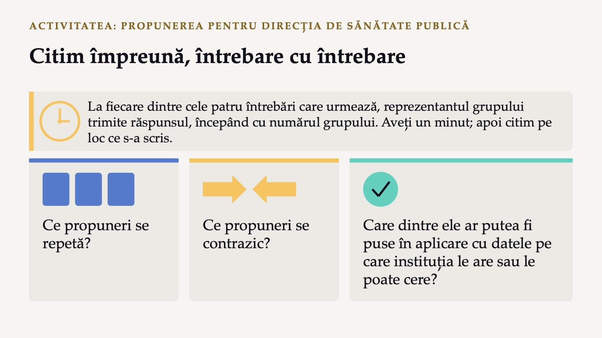
65 / 70Ne-am întors în sala comună. Luăm cele patru întrebări pe rând și ne oprim la propunerile care se repetă și la cele care se contrazic.
Costul guvernanței hibride: datele sunt împărțite între instituții
 66 / 70
66 / 70Prezentarea vede în împărțirea serviciului între mai multe instituții o explicație a rezistenței lui. Pe documentul ședinței, aceeași împărțire are și un cost, pe care prezentarea nu îl discută. S-a căutat și un raport național sau un audit cu timpi de răspuns pe medii și nu s-a găsit.
?
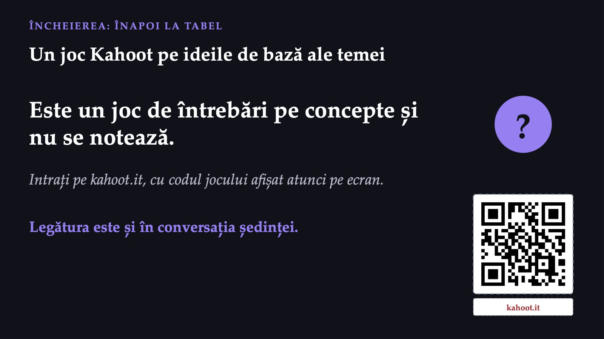
67 / 70Încheiem cu un joc de întrebări pe concepte, pe telefon. Nu se notează și nu cere cifre de memorat.
Înapoi la tabel: acum spune mai mult și mai puțin
![ÎNCHEIEREA: ÎNAPOI LA TABEL Înapoi la tabel: acum spune mai mult și mai puțin Spune mai mult: știm cui îi sunt subordonate echipajele, ce praguri prevede legea pentru fiecare tip de echipaj și ce alte structuri din județ lipsesc din el. Spune mai puțin, pentru că știm ce nu arată: ce numără coloana „Pompieri”, ce tipuri de echipaje adună coloana „SMURD” și de când se măsoară timpul. Nu arată nici câte cazuri au depășit pragul, cum arată extremele din spatele mediei și de ce alt raport dă alte cifre pentru același an.](diapozitive/C15/068.jpg) 68 / 70
68 / 70Am pornit de la un tabel și de la două alineate de lege. După trei ore, tabelul spune mai mult și mai puțin decât la început. Amintiți-vă ce ați răspuns la prima întrebare de opinie, despre cât de siguri sunteți că norma este respectată.
Ce rămâne pentru meserie
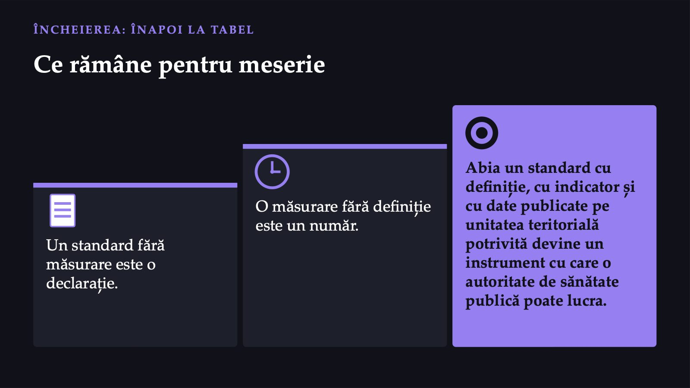
69 / 70Teza prezentării, că sistemul de urgență este reușita sistemului de sănătate românesc de după 1989 și că reușita are perdanți teritoriali, rămâne o teză serioasă. Sursele verificate îi confirmă cadrul: un serviciu înființat în 1990, așezat în lege, apreciat de o evaluare externă, cu o diferență măsurabilă între urban și rural. Nu îi confirmă cifrele. Între o convingere larg împărtășită și o afirmație care poate fi scrisă într-un raport stau o definiție, o sursă și un an de referință.
Tema următoare: politica medicamentului
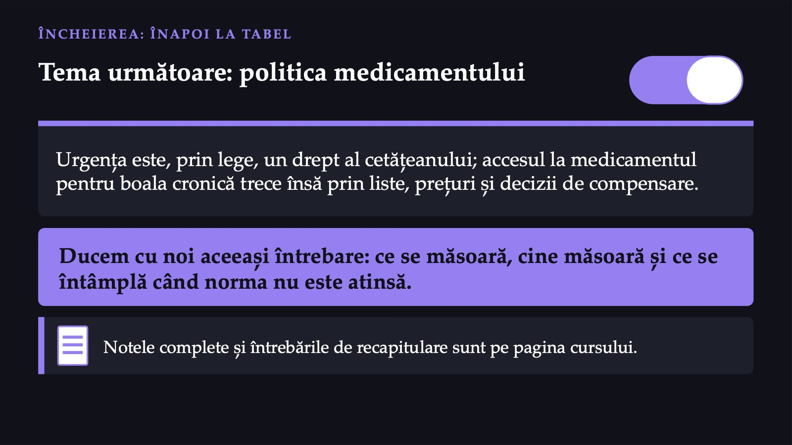
70 / 70Tema următoare schimbă logica. Ducem cu noi aceeași întrebare. Notele complete ale temei de azi, cu toate sursele și cu lista lucrurilor pe care nu le putem afirma, sunt pe pagina cursului. Vă mulțumesc.
Săgeți sau spațiu: navigare · O: vedere de ansamblu · N: notele prezentatorului · F: ecran complet · Esc: închidere